6.810 Engineering Interactive Technologies (fall 2020)
On-Body User Interfaces using Tattoo Transfer Paper
Your Task for Today
Today, we want to move our circuits off the paper and onto our bodies.
In particular, we are going to create an input menu on our fore arm and attach a bend sensor that can recognize gestures performed by flexing our wrist as shown below.
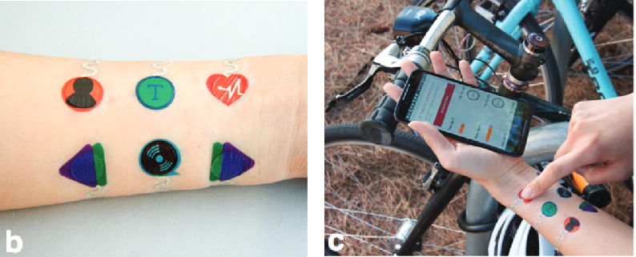
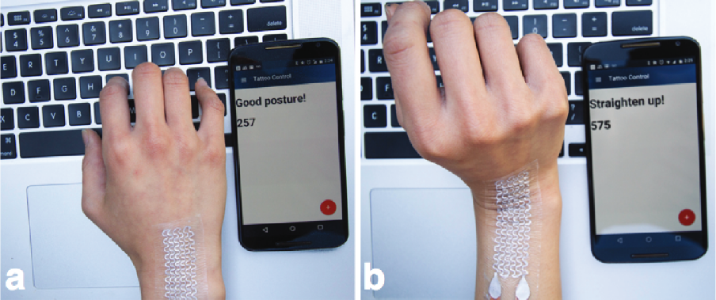
Safety
Skin Safety of Materials: We use materials for the substrate and traces that have been approved by the U.S. Food and Drug Administration (FDA)for safe usage on human skin. To minimize the possibility of negative skin-reaction, we use only commercially available temporary tattoo paper as the substrate, and amedical electrode grade silver screen-printing ink as the conductive material for the circuitry.
Amount of Current: We are only going to use the output of the ESP32 (5V) for our devices. Since skin has a high resistance, the current is naturally limited and is considered physiologically safe for humans. At no point are you allowed to use anything else to connect to your on-skin device than the ESP32 we provided you.
If you do not feel comfortable applying the tattoo to your skin, you can also apply it to an object in your surrounding and if that's not available, you can also apply it to a piece of paper. If you have any questions, please contact the teaching team.
we decided against fabricating the Skintillates devices with inkjet printing because of the lack of data in the safety and long-term biocompatibility of these inks. also check the silver pen.
Designing your On-Body Interface
We first need to create the aesthetic and circuit design for our on-body user interface.
We will first only do the menu, and then do the bend sensor later.
In particular, our menu should have 6 buttons that have the following functions: XX, YY, ZZ.
Note that you can cover parts of the circuit design if you put the conductive traces underneath the design parts.
These parts will be hidden from the user's eye since the art layer will overlay them in the final tattoo.
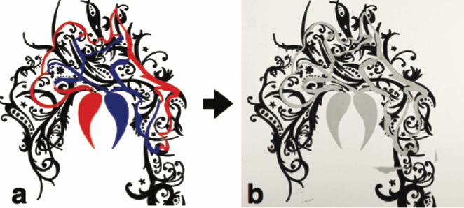
(left) The art layer (in black) and the electrical traces (in red and blue). Paper Skintillates
If you have a 2D printer at home, you can 2D print the visual design onto the tattoo transfer paper, so you can make a more complex design. Open your drawing program, and create the design. Note however, that you will need to hand-draw the conductive traces with the silver pen we provided you.
If you don't have a 2D printer at home, you need to handdraw the design. To plan our your design, we recommend you either use a drawing program or a seperate piece of paper. You will use some color pens and the silver pen we provided you to draw your design.
Copying your Design onto the Tattoo-Transfer Paper
Your tattoo transfer package contains two different types of sheets (Silhouette Inkjet Printable tattoo paper, $7.42 for four 8.5”x11” sheets).
The white sheet is the sheet on which we will create the design.
The greenish sheet is the adhesive sheet, which we will use later to transfer the tattoo onto the skin.
First, take the white sheet, i.e. the temporary tattoo paper with its paper backing our of its packaging.
The white sheet has a glossy side and a non-glossy side.
You need to create your artwork on the glossy side.
Before transferring your image, make sure the image is mirrored, since it will be flipped when you apply the paper to your skin.
If you use a 2D printer, make sure you know which way you have to insert the paper so that the printer prints on the glossy side. Use the printers photo paper settings if available.
If you use pens, you can draw your design directly on the glossy side.
Next, use the silver pen we provided you to sketch out the conductive traces.
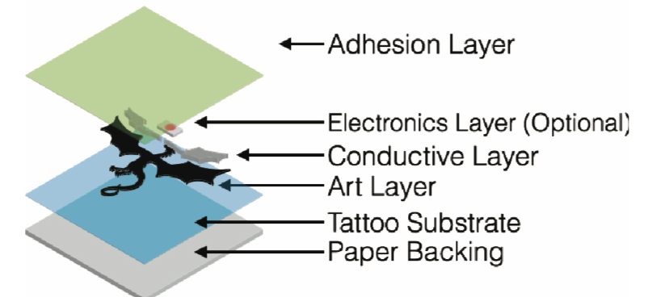
The paper backing and tattoo substrate are the white sheet, then you put your art layer and the conductive layer, and finally you close it off with the green adhesive sheet.
Paper Skintillates: Designing and Creating Epidermal Interactions
Transferring the Tattoo onto the Skin
Cut out a square area around your design on the white sheet. Put the remaining white sheet back into the box for later use.
Next, cut our a similar sized area from the green sheet, which we will be used to form the adhesive layer. Put the remaining green sheet back into the box for later use.
When ink is dry, apply the green sheet (adhesive sheet) by peeling away the green backing and then place the sticky transparent film on to the top of the printed image.
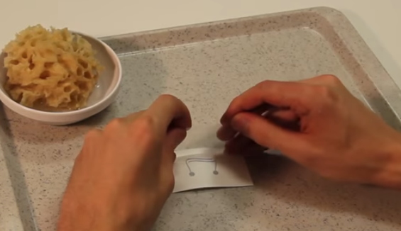
Use a scraper tool or ruler to make sure the adhesive sheet is attached over the entire area, this is important so make sure you press on it properly across the entire area, otherwise parts of your tattoo will not have adhesive on them and will not stick to your skin.
Next, cut out the design around its outline using either a scissor, laser cutter, or paper plotter (the Silhouette has a 'Temporary Tattoo Paper' setting).
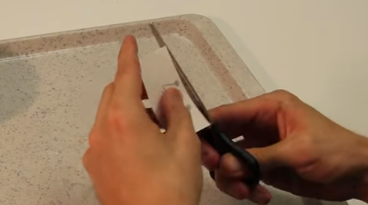
Remove the clear plastic from the adhesive layer (yes all that's left will be the glue), which exposes the adhesive.
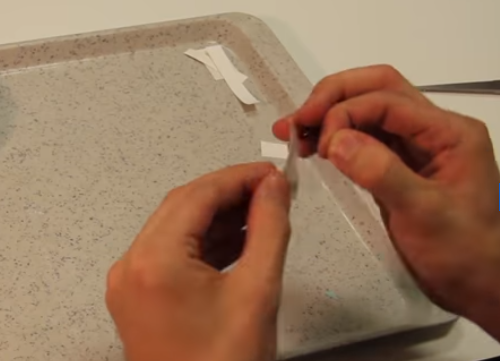
Get a wet sponge or wet cloth ready.
Then apply the tattoo adhesive side to your skin and cover with the wet cloth for 10-15 seconds, you will know you are getting there when the paper backing slides off easily.
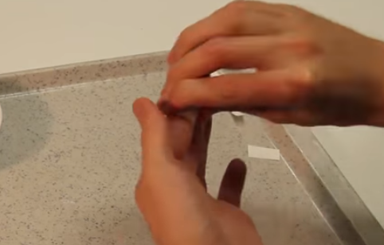
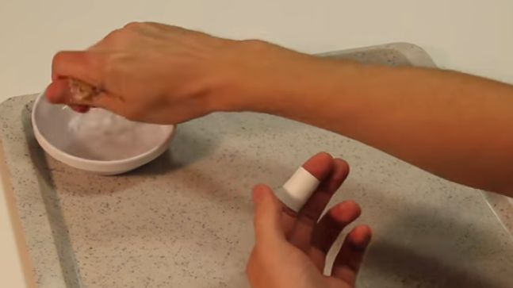
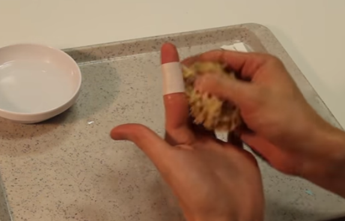
Cost: A Skintillates tattoo that measures 6.5 in x 1.0 in would cost $0.23 in temporary tattoo paper and adhesive. It would take approximately 0.3g of silver screen-printing ink to fabricate the circuit, which would cost $1.2. With $0.50 allocated for two surface mount LEDs, the total cost of such a device is $1.83.
(1) inkjet print art design on glossy side of paper.
(2) inkjet print electronics design.
(3) add electronic components with z-tape.
(4) add copper tape to the connectors to power circuit.
(2) remove backing from adhesive film and apply to design.
(1) cut out design.
(1) remove adhesive film to expose adhesive.
(1) hold tattoo in the right location.
(1) moist sponge.
(1) moist tattoo.
(1) remove paper.
(1) connect to remaining circuit (see below)
Surface mount 0603 LEDsand resistors, which have thickness of500μm, were usedthroughout this study to minimize the added thickness inlocations where they were mounted.
Connect to Remaining Circuit
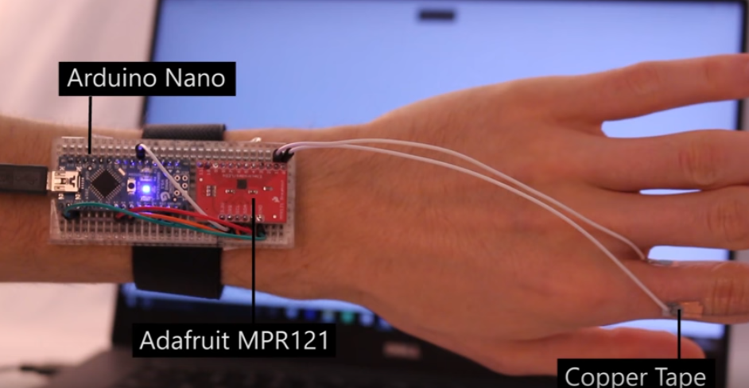
Additional Design Options
Blending the Art and Conductive Layer: see below, (a) A dark colored pattern is printed on the art layer to completely cover the conductive layer, b) A lighter gradient color is printed on the art layer to allow the shape and silver color of the conductive layer to peek through, c) The pattern of the conductive layer is designed to complement the blue flower printed on the art layer, d) The silver conductive layer can be designed to be a design element.

Paper Skintillates: Designing and Creating Epidermal Interactions
Multi-Layer Circuits: see below, a) An exploded illustration of the different layers: a bottom layer consists of the basic art and conductive layer, while a second conductive layer is connected to the first layer through vias and the adhesive layer. b) a photograph of the two overlaying but insulated conductive layers, c) the multilayer display under operation while being compressed, showing that it maintains functionality while being flexed. This second conductive layer was printed on a separate temporary tattoo substrate, and was released from the paper backing onto the first conductive layer. In order to electrically connect the first and second conductive layers, we created electrical vias, which are openings that allow for electrical connections, by cutting holes in the second layer substrate at appropriate locations. (b) shows a close-up image of the dual-layer device.
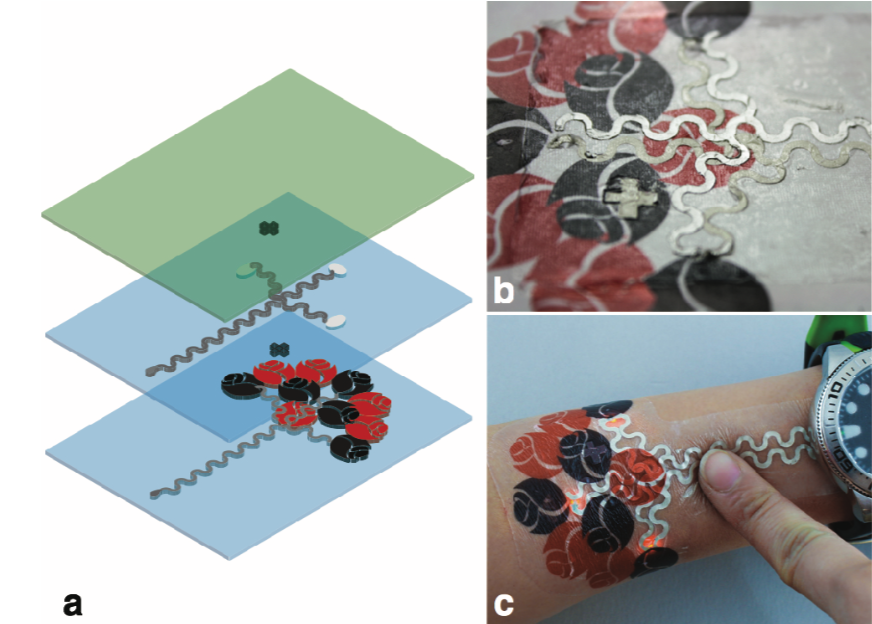
Paper Skintillates: Designing and Creating Epidermal Interactions


(left) programmable LED displays with customized aesthetic design, (middle) unclear, (right) strain gauges that respond to body movement e.g. to improve posture.
Paper Skintillates: Designing and Creating Epidermal Interactions

Paper SkinMarks: Enabling Interactions on Body Landmarks Using Conformal Skin Electronics